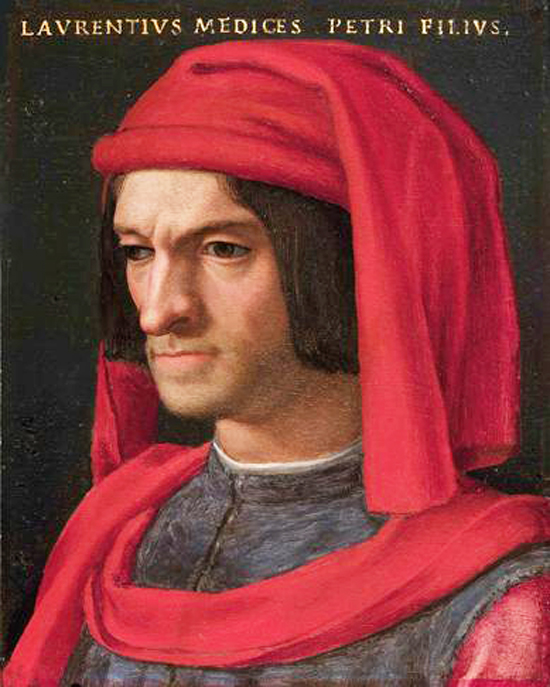

El renacimiento es definido como un fenómeno o período ocurrido en Europa durante el final de la edad media y el principio de la época moderna. Hay autores que lo definen como fenómeno, mientras que otros como un período, pero ambas nociones son correctas. Pues fue un período que comenzó con la crisis de la edad media tardía y la merma del humanismo. Pero también fue un fenómeno cultural que dejó rastros muy fuertes en el arte y el conocimiento en todas sus formas. Tanto en su vertiente artística como en la intelectual, el renacimiento se caracterizó por “mirar” hacia el pasado y retomar los valores y conocimientos de la Grecia y Roma antiguas. Es así, que surge el humanismo en contraposición del resto de la edad media. Desde la caída de Roma hasta el inicio del renacimiento, la mirada del hombre estaba fuertemente centrada en Dios, en el sufrimiento en vida para gozar del paraíso. Pero, con la gente pudiente de Europa estos querían pasarla bien en la vida y en el más allá. Es en este contexto donde el ser humano (con poder económico, algún tipo de habilidad o conocimiento) pasa a ser el centro de la cosmovisión de las personas. Esto no quiere decir que la gente dejó de ser religiosa, no, esto simplemente implica que el hombre (como persona humana, aunque si es verdad que la mujer no gozaba de muchos derechos) y el conocimiento pasan a tomar un papel protagónico. Para entender este cambio, hay una historia muy famosa que ilustra muy bien el punto.
En la edad media, cuando una persona moría este era encomendado a dios y enterrado. Los motivos para un cadáver post mortem era si se buscaba robar la tumba del muerto o para quemar el cuerpo (durante la peste). Bueno, pues Da Vinci, buscando entender el funcionamiento del cuerpo humano este (por la noche) robaba cadáveres para abrirlos y estudiarlos. Este acto ilustra que no se esta priorizando a la acción de Dios, sino al conocimiento que se puede ganar del cuerpo del difunto. También cabe aclarar que esto es en general, no solo que no existen absolutos. Sino que quizá en algún momento algún noble podía usar un cráneo como trofeo o soldados usar partes del cuerpo empaladas para intimidar a algún invasor. Sino que se habla de la actitud de la búsqueda del conocimiento por sobre Dios, se buscan explicaciones lógicas, más allá de “llueve porque es la voluntad de Dios”.
Muchos argumentan que las ideas características del renacimiento se originó en Florencia (Italia), en particular con los escritos de Dante y las pinturas de Giotto. Aunque aún a dia de hoy sigue habiendo debate sobre el porqué comenzó en Florencia y sus motivos para comenzar.
Al hablar del renacimiento, es inevitable hablar de Florencia (Italia) y de los Medici, aunque estos no asumieron el poder de Florencia hasta finales del siglo XIV. La ciudad de Siena había perdido su estatus de “banco de Italia” (por haberse quedado sin recursos económicos) con Florencia tomando su lugar.
Los Medici eran banqueros, el banco más grande de Europa en su momento, Florencia había organizado rutas comerciales entre gran parte de Europa. Por lo cual Florencia se había convertido en una de las ciudades mas ricas de Europa. La caída del imperio bizantino marcó un éxodo de estudiosos que fueron a parar en Florencia (llevando sus textos consigo). Esto provocó (y permitió) un fuerte estudio de la cultura griega (antigua) con gran interés en Platón.
Cosimo de Medici era muy popular entre los ciudadanos, por traer una era de estabilidad y prosperidad a Florencia. Uno de sus logros más grandes fue negociar la paz con Francesco Sforza terminando así la guerra con Milán. Cosimo también fue un mecenas muy importante para todo tipo de artes.Este fue precedido por su hijo Piero (quien murió luego de 5 años a cargo de la ciudad), quien fue rápidamente precedido por su hijo Lorenzo (quien tenía 21 años).

Lorenzo “el magnífico” fue el primero de su familia en ser educado en la tradición humanista desde temprana edad. Este fue excelente en la propagación del arte y el conocimiento en todas sus formas, como comerciante y político, no tanto. Si bien mediante el mecenazgo de Lorenzo fue que el renacimiento floreció, el imperio de comercio Medici lentamente se marchitaba.
El renacimiento también cambió la percepción del artista, siendo que en un inicio (en la edad media y al inicio del renacimiento) los artistas no tenían casi relevancia. Para el renacimiento tardío, los artistas eran vistos como grandes artesanos con gran talento y prestigio, volviéndose casi aristócratas.